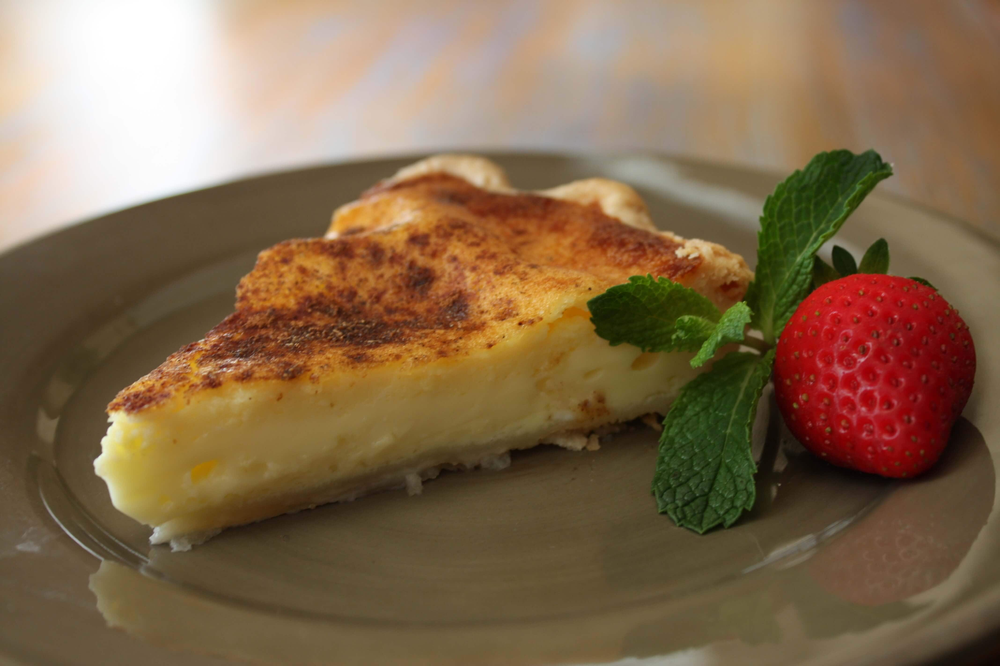

Milk Tart

Prep Time: 20 mins
Yield: 8 servings
Ingredients:
- 2 cups milk
- 2 tablespoons flour
- 2 tablespoons cornflour
- 2 eggs
- 1/2 cup sugar
- 1 teaspoon vanilla extract
- Cinnamon for dusting
Steps:
- Heat milk until warm.
- Mix flour, cornflour, eggs, sugar, and vanilla.
- Slowly add to milk and stir.
- Pour into tart shell and chill.
- Sprinkle cinnamon and serve!